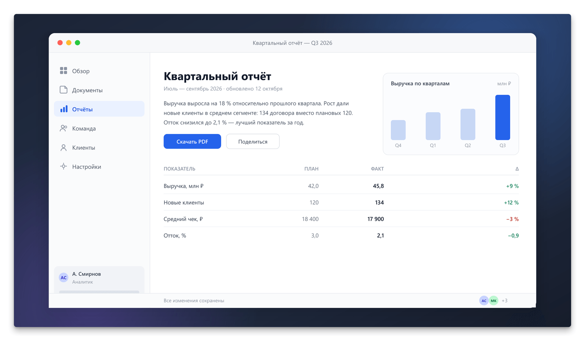
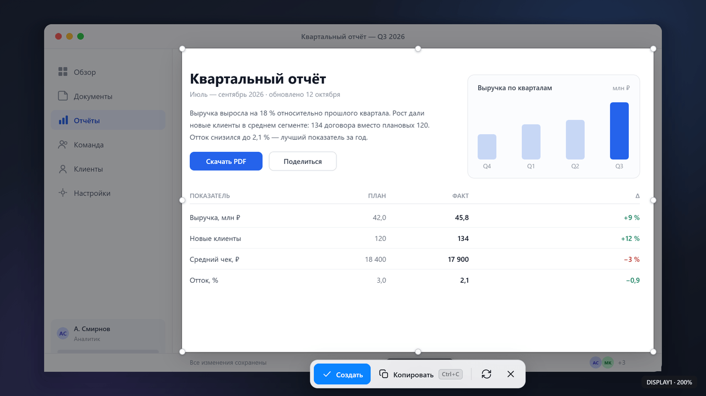
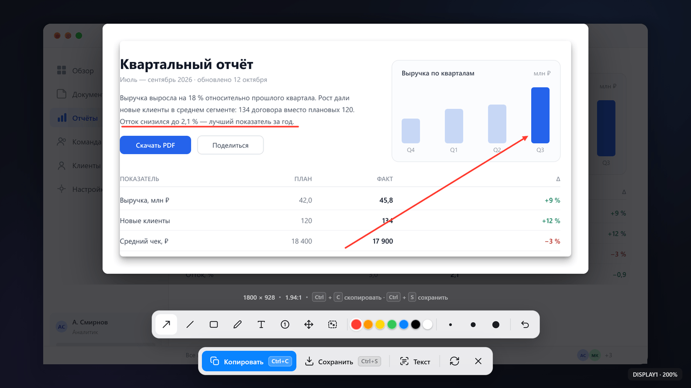
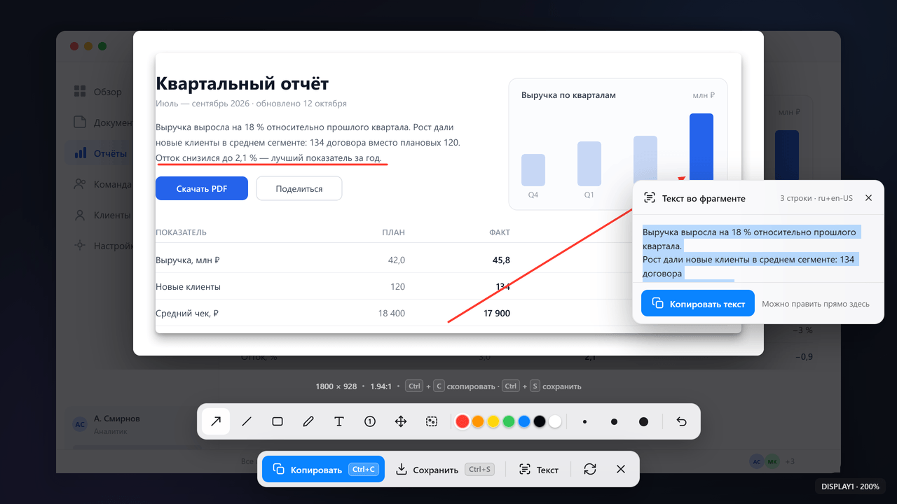
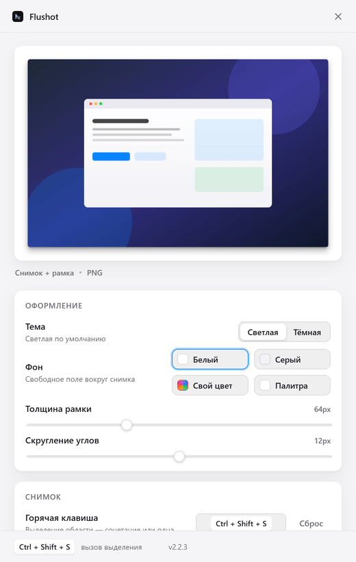
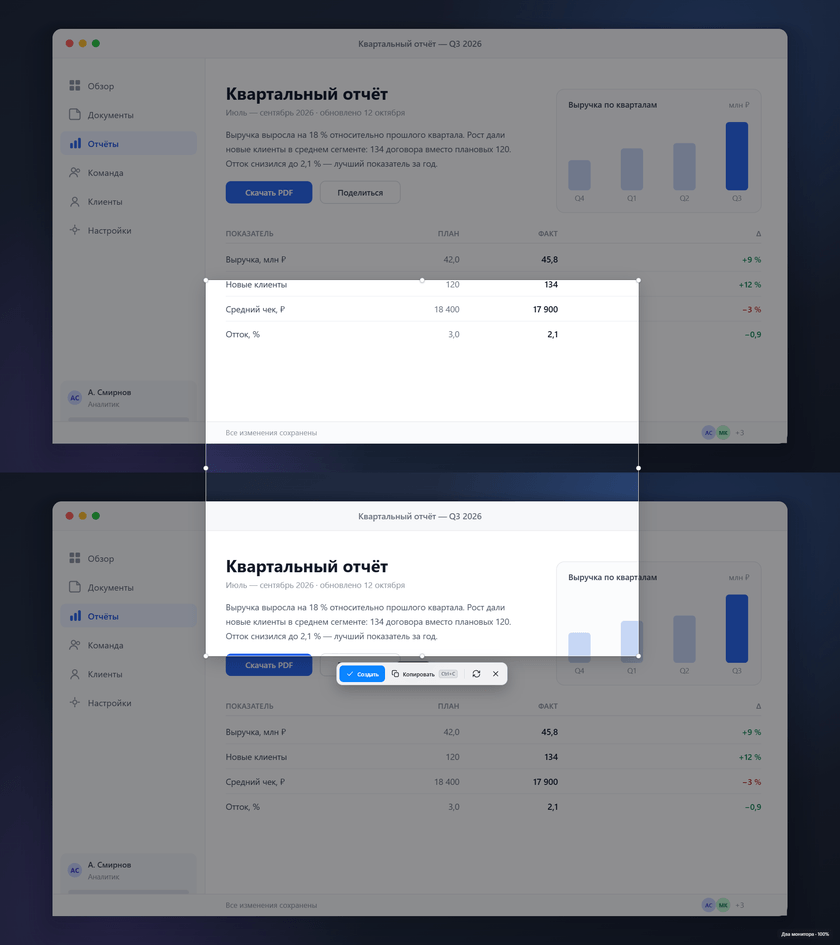

Ровная линия
Отдельный инструмент для подчёркивания. С зажатым Shift линия прилипает к 0°, 45° или 90°.
⇧ Shift
Windows 10 и 11 · версия 2.2.8 · бесплатно
Выделили область — снимок уже в рамке, с мягкой тенью и скруглёнными углами. Ровная линия для подчёркивания, снимок всего экрана одной клавишей, PNG без потерь.
Без рекламы и интернета · есть portable и архив без установки

Возможности
Девять вещей, из-за которых Flushot ставят вместо «Ножниц» Windows.
Отдельный инструмент для подчёркивания. С зажатым Shift линия прилипает к 0°, 45° или 90°.
⇧ Shift
Обе клавиши назначаются в настройках — любые, какие удобны. Хоть Print Screen, хоть F1.
Print Screen · F1 · любая
Цвет фона, толщина рамки, радиус скругления и сила тени — всё настраивается.
64 px · r12
Стрелка, линия, прямоугольник, карандаш, текст, нумерованные шаги и размытие.
7 инструментов
Выделение тянется через границу экранов. Масштаб 125 % и 150 % не ломает ни рамку, ни снимок.
100–150 %
Выделили весь экран — панель с кнопками осталась на виду, искать её по краям не нужно.
даже у края экрана
Размер в пикселях обновляется, пока тянете рамку. Рамку можно двигать целиком и менять за любой край.
1280 × 720 px
Ни проверки обновлений, ни телеметрии, ни входа в аккаунт. Работает офлайн сколько угодно.
0 запросов
Обведите на снимке фрагмент — «Текст» прочитает его встроенными движками Windows: без загрузки языков, без интернета и без отправки снимка куда-либо.
Windows OCR · офлайн, без загрузок
Как это работает
Разница
Что происходит со снимком до и после Flushot.
screenshot.png перезаписал предыдущий
screenshot_2026-10-21_10-34-11.png
Горячие клавиши
В текстах выше написаны значения по умолчанию. Это именно значения по умолчанию: обе клавиши меняются в настройках на любые удобные. Ниже — рабочая демонстрация: нажмите «Изменить» и введите сочетание.
Скриншоты
Снято на Windows при масштабе экрана 100 %.

Затемнение, прицел и размер области. Панель с кнопками внизу — видна даже при выделении всего экрана.

Пометки: стрелка, линия, прямоугольник, карандаш, текст, шаги и размытие.

Кнопка «Текст» включает выбор фрагмента: обведите нужный кусок — рядом появится распознанный текст, его можно поправить и скопировать. Нажатие без обводки читает весь снимок.


Выделение тянется через границу экранов, снимок собирается из обоих в исходном разрешении. Отдельная клавиша «весь экран» снимает основной монитор.
Скачать
Три варианта одной и той же сборки. Программа внутри одинаковая — выбирайте по способу установки.
Распаковать в любую папку и запустить Flushot.exe. Ничего не устанавливается, временная папка Windows не нужна.
Внутри Flushot-2.2.8-x64.exe. Двойной клик, «Установить» — появятся ярлыки в меню «Пуск» и строка удаления.
Один файл без установки. При первом запуске распаковывается во временную папку, поэтому нужен рабочий %TEMP%.
Про синее окно Windows. При первом запуске SmartScreen покажет «Windows защитила ваш компьютер». Так бывает с любым файлом без платного сертификата разработчика. Нажмите «Подробнее» → «Выполнить всё равно».
Вопросы
Нет. Предупреждение появляется из-за отсутствия цифровой подписи, а не из-за содержимого. Подпись — платный сертификат, который для бесплатной программы не покупают. Нажмите «Подробнее» → «Выполнить всё равно».
По умолчанию в Изображения\Flushot. Папку можно сменить в настройках, там же есть кнопка, которая открывает её в проводнике. Имя файла — дата и время, поэтому ничего не перезаписывается.
После «Создать» над карточкой появляется подпись «Сохранено · имя файла» — над кнопками, а не поверх них, и всегда на основном мониторе, даже если область выделяли на втором.
Да, обе. Если сочетание занято другой программой, Flushot так и скажет. Две одинаковые клавиши назначить нельзя: Windows отдаёт сочетание только одному действию.
А вот Win+Shift+S назначить не получится ни у нас, ни у кого-либо ещё: пока в Windows установлены «Ножницы», это сочетание принадлежит им. Настройки назовут хозяина и предложат два выхода: удалить «Ножницы» или набрать другое сочетание.
Готовых кнопок с нашими вариантами в настройках нет: сочетание вы назначаете сами, записью с клавиатуры. Чужие предложения там только мешали.
Кнопка «Текст» включает выбор фрагмента: обведите на снимке нужный кусок — рядом появится распознанный текст, его можно скопировать одной кнопкой. Нажатие без обводки читает весь снимок. Работает встроенный движок Windows, тот же, что у «Ножниц»: ничего не скачивается, интернет не нужен, снимок не покидает компьютер. Карточка 880 × 1200 с двадцатью строками читается примерно за 1,1 с после первого запуска — три чтения вместо одного стоят около 0,6 с и окупаются меньшим числом ошибок.
Текст в панели можно править: клик в слово, исправление, «Копировать исправленное» — в буфер уйдёт уже исправленный текст, без промежуточной вставки в блокнот. Метка «правлено» и кнопка «Вернуть» показывают, чем текст отличается от прочитанного движком.
Движок Windows одноязычный, поэтому читают все установленные движки сразу, а результат сводится по строкам: каждый движок прав ровно про свой алфавит, и лучшего для смешанного снимка не существует. Вдобавок каждый снимок читается трижды — в выбранном масштабе, в две трети от него и ещё раз в чёрно-белом виде, — и спорное слово решается голосованием. На наборе из 20 строк настоящего текста в четырёх размерах шрифта это дало 3,22 % неверных символов против 3,50 % у одного чтения.
Это не OCR для сканов: на мелком шрифте и цветном тексте поверх картинки движок ошибается. Там, где все чтения сходятся на неверном (на 11 px «Папка» читается как «Палка» у обоих движков), свести нечего — именно для этого случая текст и правится руками.
Да. Выделение тянется по объединённой области всех мониторов, даже если они разного размера и стоят один над другим. Снимок собирается из обоих в исходном разрешении. Отдельная клавиша «весь экран» снимает основной монитор.
Нет. Программа не делает сетевых запросов вообще: ни проверки обновлений, ни телеметрии, ни входа в аккаунт. Скачали один раз — работает офлайн сколько угодно.
Снимок делается в физических пикселях монитора, поэтому на масштабе 125 % или 150 % он не мыльный. PNG сохраняется без потерь. Если нужен файл полегче — есть JPEG с настраиваемым качеством и WebP.
Нет, интерфейс только на русском. Это одна из честных границ: перевода пока не сделали.
Ctrl+Z отменяет последнее действие. Отдельный нумерованный шаг из середины убрать нельзя — нумерация пересчитывается автоматически, и выборочное удаление сломало бы её.
Да. Без рекламы, без подписок, без урезанных версий и без регистрации.
Ограничения
Лучше узнать это здесь, чем после скачивания.
Если не понравится — удалить так же просто, как распаковать.